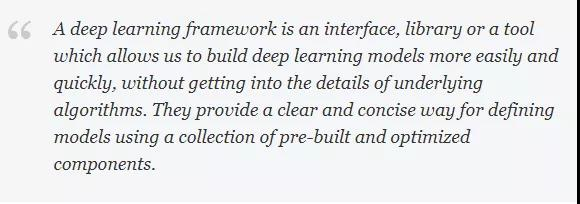
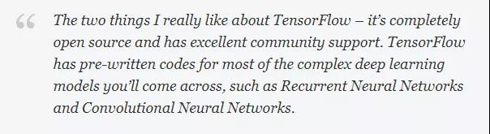

数据科学家必知的 5 个深度学习框架¶
从出道起，我就一直是一名程序员。我喜欢从头开始编写代码，这有助于我清楚地理解主题（或技巧）。当我们刚开始学习数据科学时，这种方法尤为有用。
尝试从无到有地实现一个神经网络，你将会明白很多有趣的事情。但是当需要为现实世界的数据集构建深度学习模型时，这还是一个不错的主意吗？如果你需要几天或几周的时间来建立起模型，这是完全不可能的。
对于那些无法访问无限计算资源的人来说，你们已经来到了正确的地方。
值得庆幸的是，我们现在已经有了易于使用的开源深度学习框架，旨在简化复杂和大规模深度学习模型的实现。使用这些神奇的框架，我们可以实现诸如卷积神经网络这样复杂的模型。
在本文中，将介绍5种非常有用的深度学习框架、它们的优点以及应用。我们将对每个框架进行比较，以了解何时何地可以使用它们。 我们还创建了一个非常酷的针对每个深度学习框架的信息图表，附在在文章的末尾，为每个数据科学家所必备。
目录¶
- 一、什么是深度学习框架？
- 二、TensorFlow
- 三、Keras
- 四、PyTorch
- 五、Caffe
- 六、Deeplearning4j
- 七、五个深度学习框架之间的对比
一、什么是深度学习框架？¶
让我们用一个例子来理解这个概念，来看以下图像集合：
在这个图像中有不同的分类：猫，骆驼，鹿，大象等。我们的任务是将这些图像归到相应的类（或类别）中。用Google搜索一下就能知道：**卷积神经网络（CNNs）**对于这类图像分类任务十分有效。
我们要做的工作就是实现这个模型，对吗？如果从头开始编写一个卷积神经网络，则需要几天（甚至几周）才能得到一个有效的模型，我们却没法等这么长的时间！
这正是深度学习框架真正改变了局面的地方。

深度学习框架是一种界面、库或工具，它使我们在无需深入了解底层算法的细节的情况下，能够更容易、更快速地构建深度学习模型。深度学习框架利用预先构建和优化好的组件集合定义模型，为模型的实现提供了一种清晰而简洁的方法。
利用恰当的框架来快速构建模型，而无需编写数百行代码，一个良好的深度学习框架具备以下关键特征：
- 优化的性能
- 易于理解和编码
- 良好的社区支持
- 并行化的进程，以减少计算
- 自动计算梯度
这五点也是我用来挑选五大顶级深度学习框架的标准。下面让我们详细研究一下它们。
二、TensorFlow¶

TensorFlow是由谷歌大脑团队的研究人员和工程师开发的，它是深度学习领域中最常用的软件库（尽管其他软件正在迅速崛起）。

我喜欢TensorFlow的原因有两点：它完全是开源的，并且有出色的社区支持。TensorFlow为大多数复杂的深度学习模型预先编写好了代码，比如递归神经网络和卷积神经网络。
TensorFlow如此流行的最大原因之一是支持多种语言来创建深度学习模型，比如Python、C和R，并且有不错的文档和指南。
TensorFlow有许多组件，其中最为突出的是：
- Tensorboard：帮助使用数据流图进行有效的数据可视化
- TensorFlow：用于快速部署新算法/试验
TensorFlow的灵活架构使我们能够在一个或多个CPU（以及GPU）上部署深度学习模型。下面是一些典型的TensorFlow用例：
- 基于文本的应用：语言检测、文本摘要
- 图像识别：图像字幕、人脸识别、目标检测
- 声音识别
- 时间序列分析
- 视频分析
用例远远不止这些，如果你知道TensorFlow还有以上所述之外的其他应用，我很乐意知道！可以在本文的评论部分告诉我，我们再做讨论。
安装TensorFlow也是一个非常简单的任务。
对于CPU：
pip install tensorflow
对于启用CUDA的GPU卡：
pip install tensorflow-gpu
通过以下综合教程了解如何使用TensorFlow建立神经网络模型：
三、Keras¶
你习惯使用Python吗？如果是，那么可以立即连接到Keras。这是一个开启你的深度学习之旅的完美的框架。
Keras用Python编写，可以在TensorFlow（以及CNTK和Theano）之上运行。TensorFlow的接口具备挑战性，因为它是一个低级库，新用户可能会很难理解某些实现。
而Keras是一个高层的API，它为快速实验而开发。因此，如果希望获得快速结果，Keras会自动处理核心任务并生成输出。Keras支持卷积神经网络和递归神经网络，可以在CPU和GPU上无缝运行。
深度学习的初学者经常会抱怨：无法正确理解复杂的模型。如果你是这样的用户，Keras便是你的正确选择！它的目标是最小化用户操作，并使其模型真正容易理解。
可以将Keras中的模型大致分为两类：
- 序列化
模型的层是按顺序定义的。这意味着当我们训练深度学习模型时，这些层次是按顺序实现的。下面是一个顺序模型的示例：
from keras.models import Sequential from keras.layers import Dense model = Sequential() # we can add multiple layers to the model using .add() model.add(Dense(units=64, activation='relu', input_dim=100)) model.add(Dense(units=10, activation='softmax'))
- Keras 函数API
用于定义复杂模型，例如多输出模型或具有共享层的模型。请查看下面的代码来理解这一点：
from keras.layers import Input, Dense from keras.models import Model inputs = Input(shape=(100,)) # specify the input shape x = Dense(64, activation='relu')(inputs) predictions = Dense(10, activation='softmax')(x) model = Model(inputs=inputs, outputs=predictions)
Keras有多种架构，如下所述，用于解决各种各样的问题，其中包括我的最爱之一：图像分类！
- VGG 16
- VGG 19
- InceptionV 3
- Mobilenet及更多 可以参考官方的Keras文档来详细了解框架是如何工作的。 Keras官方中文文档
仅需一行代码即可安装Keras：
pip install keras
对Keras感兴趣？可以继续学习以下教程，了解如何使用Keras实现神经网络：
四、PyTorch¶
还记得我们说过TensorFlow是目前最常用的深度学习框架吗？但是如果考虑到数据科学家和开发者们拥抱Facebook的PyTorch的速度，那它可能很快就要落伍了。
我是PyTorch的拥护者，在我所研究过的框架中，PyTorch最富灵活性。
PyTorch是Torch深度学习框架的一个接口，可用于建立深度神经网络和执行张量计算。Torch是一个基于Lua的框架，而PyTorch则运行在Python上。
PyTorch是一个Python包，它提供张量计算。张量是多维数组，就像numpy的ndarray一样，它也可以在GPU上运行。PyTorch使用动态计算图，PyTorch的Autograd软件包从张量生成计算图，并自动计算梯度。
与特定功能的预定义的图表不同，PyTorch提供了一个框架，用于在运行时构建计算图形，甚至在运行时也可以对这些图形进行更改。当不知道创建神经网络需要多少内存的情况下，这个功能便很有价值。
可以使用PyTorch处理各种来自深度学习的挑战，包括：
- 影像（检测、分类等）
- 文本(NLP)
- 增强学习
想知道如何在机器上安装PyTorch，请稍等片刻。安装步骤取决于操作系统、需要安装的PyTorch包、正在使用的工具/语言、CUDA等其他一些因素。
根据此链接的内容检查PyTorch安装步骤，准备好框架之后，再检查以下两个资源，利用PyTorch构建第一个神经网络：
五、Caffe¶
CAFE是另一个面向图像处理领域的、比较流行的深度学习框架，它是由贾阳青（Yangqing Jia）在加利福尼亚伯克利大学读博士期间开发的。同样，它也是开源的！
首先，Caffe对递归网络和语言建模的支持不如上述三个框架。但是Caffe最突出的地方是它的处理速度和从图像中学习的速度。

Caffe可以每天处理超过六千万张图像，只需单个NVIDIA K40 GPU，其中 1毫秒/图像用于推理，4毫秒/图像用于学习。
它为C、Python、MATLAB等接口以及传统的命令行提供了坚实的支持。
通过Caffe Model Zoo框架可访问用于解决深度学习问题的预训练网络、模型和权重。这些模型可完成下述任务：
- 简单的递归
- 大规模视觉分类
- 用于图像相似性的SiameSE网络
- 语音和机器人应用
有关更多细节，您可以查看Caffe相关文档。
六、Deeplearning4j¶
我们社区中有Java程序员吗？这是你理想的深度学习框架！Deeplearning4j是用Java实现的，因此与Python相比效率更高。它使用称为ND4J的张量库，提供了处理n维数组（也称为张量）的能力。该框架还支持CPU和GPU。
Deeplearning4j将加载数据和训练算法的任务作为单独的过程处理，这种功能分离提供了很大的灵活性。谁都喜欢这样，尤其是在深度学习中！
Deeplearning4j也适用于不同的数据类型：
- 图像
- CSV
- 纯文本等
可以使用Deeplearning4j构建的深度学习模型有：
- 卷积神经网络(CNNs)
- 递归神经网络(RNNs)
- 长短时记忆(LSTM)等多种结构
阅读Deeplearning4j的安装步骤和文档，开始使用这个框架。
七、五种深度学习框架之间的对比¶
上面已经讨论了五个最流行的深度学习框架，每一个都独具特性，那么数据科学家会如何做出选择呢。
你决定用哪一种了吗？或者你打算换一个全新的框架？不管是什么情况，了解每个框架的优点和局限性非常重要。如果选对了正确的框架，当遇到错误时，便不会感到惊讶了！
某些框架在处理图像数据时工作得非常好，但无法解析文本数据；某些框架在处理图像和文本数据时，性能很好，但是它们的内部工作原理很难理解。 在本节中，将使用以下标准比较这五个深度学习框架：
- 社区支持力度
- 使用的语言
- 接口
- 对预训练的模型的支持
下表对这些框架进行了比较：

对于选择使用的框架来说，这是一个非常方便的对比表！
所有这些框架都是开源的，支持CUDA，并有预训练的模型。**但是，应该如何正确开始，应该选择哪个框架来构建（初始）深度学习模型？**让我们来做详细的讨论！
我们先来说说TensortFlow。TensorFlow能处理图像以及基于序列的数据，如果你是深度学习的初学者，或者对线性代数和微积分等数学概念没有坚实的基础，那么TensortFlow的学习曲线将会令人畏惧地陡峭。
我完全理解，对于刚起步的人来说，这可能太复杂。但我建议你不断练习，不断探索社区，并继续阅读文章以掌握TensorFlow的诀窍。一旦对这个框架有了一个很好的理解，实现一个深度学习模型对你来说将是易如反掌。
Keras是一个非常坚实的框架，可以开启深度学习之旅。如果你熟悉Python，并且没有进行一些高级研究或开发某种特殊的神经网络，那么Keras适合你。
Keras的重点更多地放在取得成果上，而不是被模型的复杂之处所困扰。因此，如果有一个与图像分类或序列模型相关的项目，可以从Keras开始，很快便可以构建出一个工作模型。
Keras也集成在TensorFlow中，因此也可以使用tf.keras.构建模型。
与特定功能的预定义的图表不同，PyTorch提供了一个框架，用于在运行时构建计算图形，甚至在运行时也可以对这些图形进行更改。当不知道创建神经网络需要多少内存的情况下，这个功能便很有价值。
在图像数据上构建深度学习模型时，Caffe是不错的选择。但是，当谈到递归神经网络和语言模型时，Caffe落后于我们讨论过的其他框架。Caffe的主要优点是，即使没有强大的机器学习或微积分知识，也可以构建出深度学习模型。
Caffe主要用于建立和部署移动电话和其他计算受限平台的深度学习模型。
正如之前所述，DeepleEarning4J是Java程序员的天堂。它为CNNS、RNN和LSTMS等不同的神经网络提供了大量的支持，它在不牺牲速度的情况下可以处理大量数据。听起来不错，有机会通过！
后记及图示信息图¶
记住，这些框架基本上只是帮助我们实现最终目标的工具，正确地选择它们可以减少大量的精力和时间。
除了文中提及的五种深度学习框架之外，你有没有其他的深度学习框架？很想听听你的想法和反馈。请issues me。